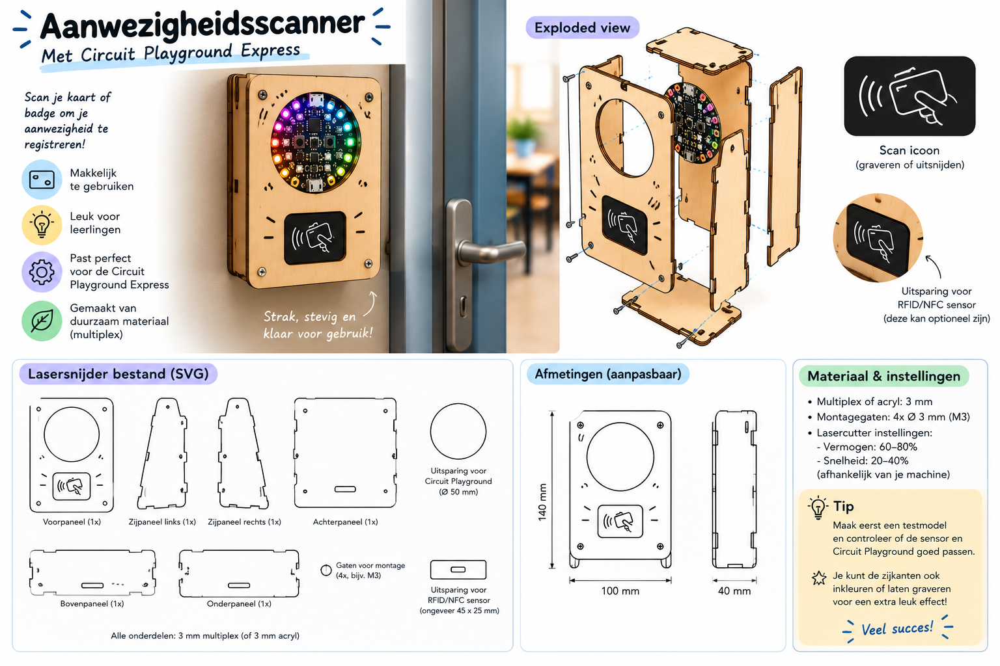
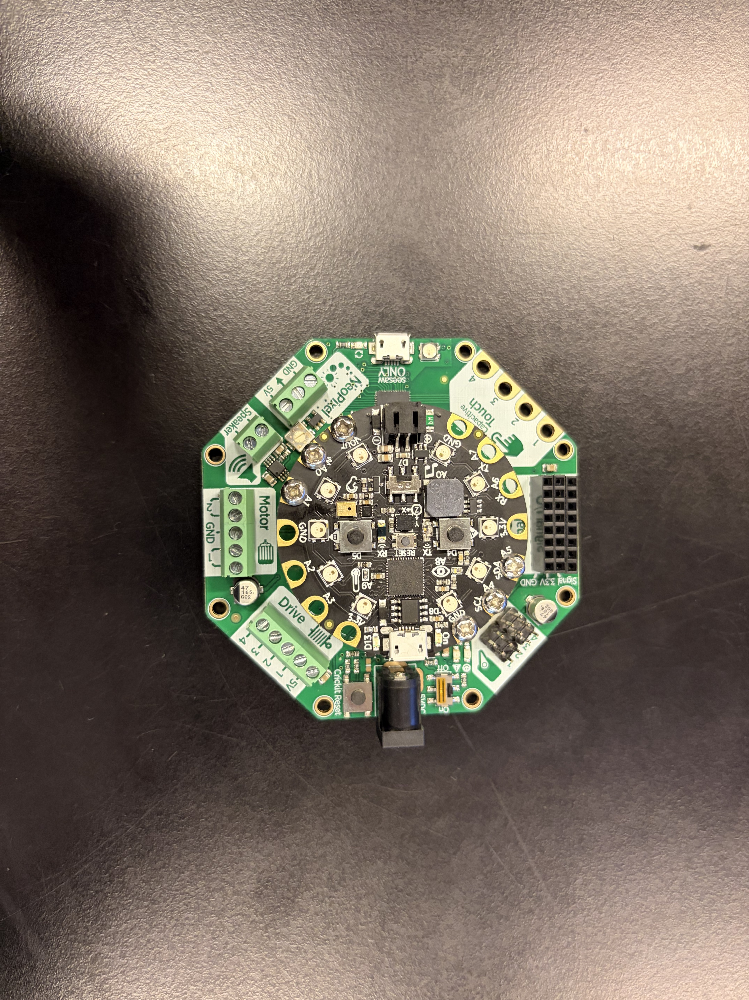
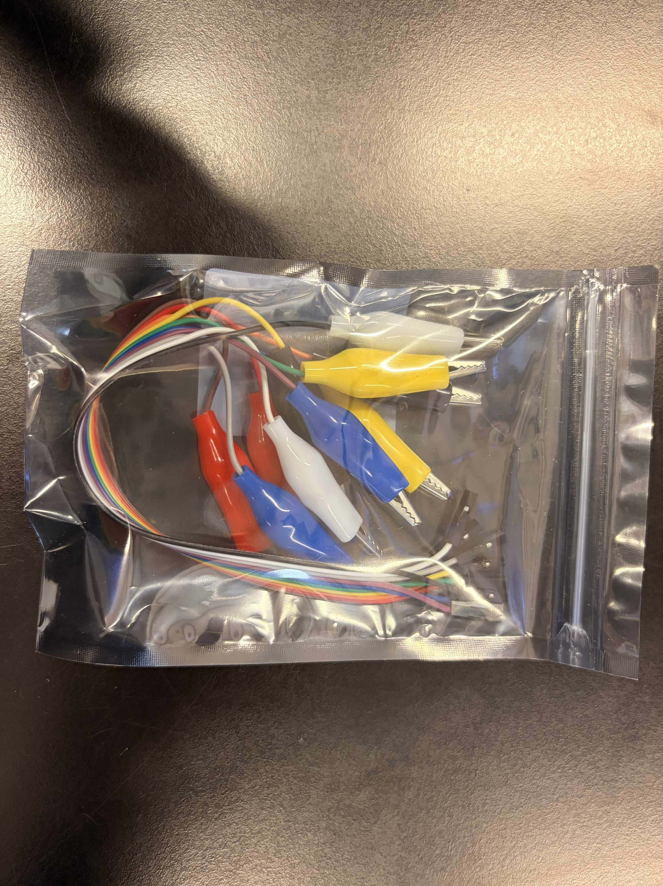
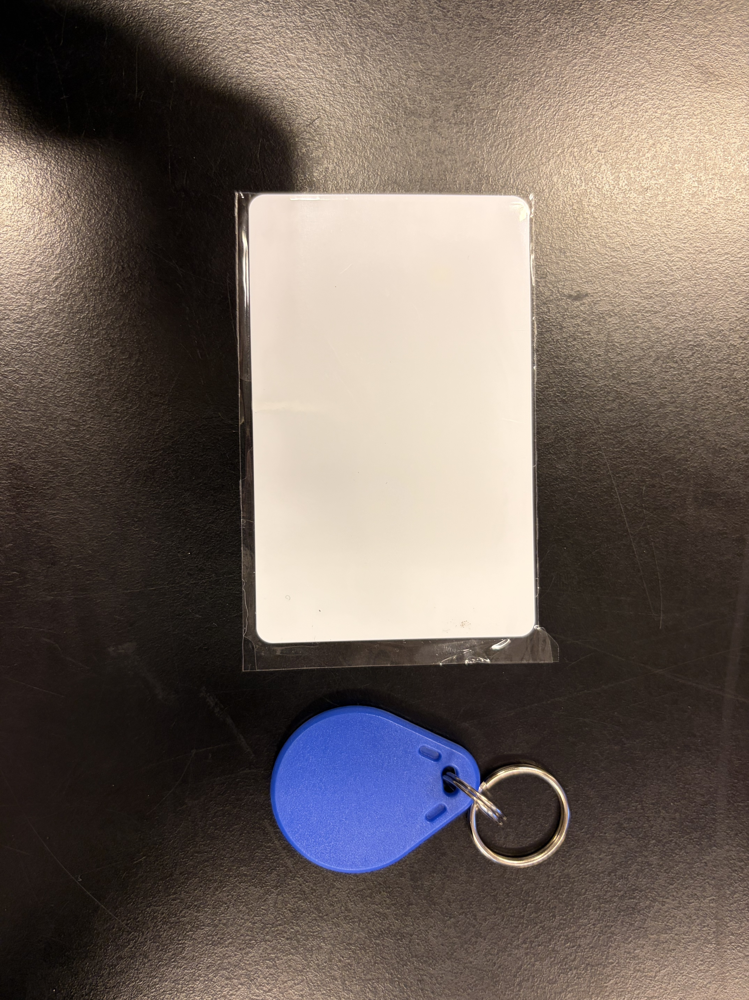
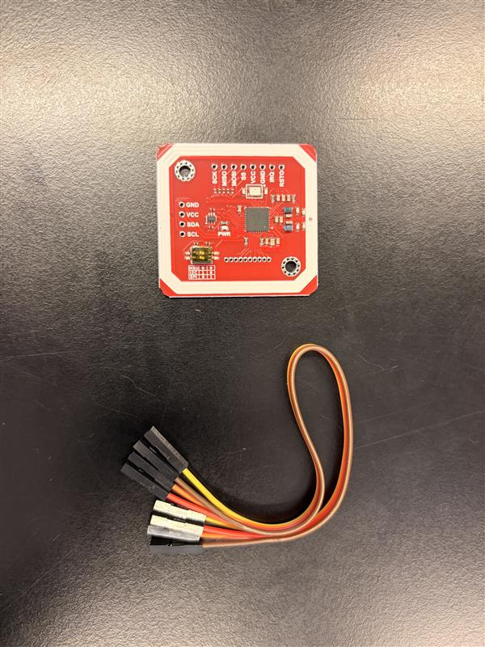

De aanwezigheidscanner
Vind jij het ook zo vervelend als het checken van aanwezigheid zo lang duurt? Wij ook! Daarom hebben we de aanwezigheidscanner ontworpen om dit probleem op te lossen. de scanner maakt het makkelijker voor docenten om de aanwezigheid van leerlingen te controleren. De scanner scant een tag of kaartje van de leerling en registreert automatisch hun aanwezigheid. Dit bespaart tijd en maakt het een stuk makkelijker voor docenten om in een keer de les te starten.
Gebruik instructies
- 1. Zet de scanner aan.
- 2. Plaats de scanner op de juiste plek naast de deur van het lokaal.
- 3. Pak een tag of kaartje en houd deze voor de scanner.
-
4. Als de scanner de tag goed scant, zal er een groen lichtje branden voor 2 seconden.
4.1 Als de scanner de tag niet goed scant, zal er een rood lichtje branden voor 2 seconden.

CPX

Krokodilklemmen

Tags

Tagreader